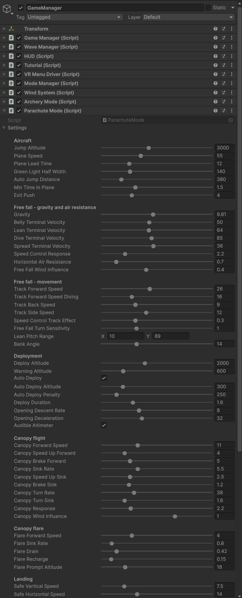

[[t-hw]] lists the development machine, read from Unity's SystemInfo in the running Editor, and the software versions read from the project's package manifest. All measurements in this report were taken on this machine.
| Item | Development and test machine (measured) | To run the project |
|---|---|---|
| CPU | 13th Gen Intel Core i7-13650HX (20 logical processors) | Any 64-bit quad-core CPU |
| GPU | NVIDIA GeForce RTX 4060 Laptop GPU, 8 GB, Direct3D 12 | DirectX 11/12 GPU; VR-ready GPU (GTX 1070 class or better) for PC VR |
| Memory | 16 GB | 8 GB (Editor: 16 GB) |
| Operating system | Windows 11 (10.0.26300) | Windows 10/11 64-bit |
| Input devices | Keyboard and mouse; Xbox-compatible gamepad optional | Keyboard and mouse; gamepad for co-op player 2 |
| XR device | None physically connected; VR verified with the OpenXR Mock Runtime (Chapter 5) | OpenXR PC VR headset (e.g. Meta Quest via Link, Valve Index, HTC Vive); Quest 3 for MR passthrough |
| Engine | Unity 6000.5.5f1, Built-in Render Pipeline | Same Editor version to open the project |
| Packages | XR Plug-in Management 4.5.4, OpenXR 1.17.1, XR Hands 1.8.0, AR Foundation 6.5.0, Unity OpenXR: Meta 2.5.0, Input System 1.19.0, AI Navigation 2.0.14 | Restored automatically by the Package Manager |
The “to run” column is a conservative estimate based on the measured frame times (Chapter 12), not a test on minimum-specification hardware.
| Technology / tool | Use in the project |
|---|---|
| Unity 6 Editor and C# (.NET Standard 2.1) [36] | Engine, scene editing, scripting of all gameplay, UI, content generation and editor builders |
| OpenXR, XR Plug-in Management, XR Hands, AR Foundation, Meta OpenXR [11–15] | VR and MR runtime, controller and hand input, passthrough and boundary (Chapter 5) |
| Input System [16] | Keyboard, mouse and gamepad devices; key rebinding back-end |
| AI Navigation (NavMesh) [17] | Path-finding for enemies, mice and rats; runtime NavMesh building |
| PhysX (Unity physics) | Collision layers, raycasts, sphere-casts, CharacterControllers, Rigidbodies |
| IMGUI and TextMesh | Desktop menus and HUDs; world-space VR text |
| Hand-written shaders (HLSL) | Post-processing, comfort vignette, cartoon toon shading, sky and effects |
| Unity CLI with the Pipeline package | Command-line recompiles, Play-mode control, script eval state checks and Game-view captures used for the verification runs and screenshots in this report |
| Git | Version control of the project |
The project contains 123 C# scripts with 31,004 lines (counted on 27 Nov 2026 with find Assets -name "*.cs"; the 22 Nov count in Chapter 4 was 30,808, and the polish pass added about 200 lines). Code is organised in three namespaces: NeonBreach (shared framework, Shooter, Archery, Parachute, VR), NeonBreach.RatShooter and NeonBreach.FarmSniper, under Assets/Scripts (Core, Player, Weapons, Enemies, Modes, UI, VR, World, Rendering, Editor), Assets/RatShooter and Assets/FarmSniper. Gameplay constants are exposed in the Inspector, so the game can be tuned without code changes; for example SkydiveSettings exposes more than 60 skydive parameters ([[f-insp-skydive]]).

| Script (lines) | Responsibility |
|---|---|
GameManager (568) | Singleton game state machine (Menu, Playing, Paused, Shop, GameOver), player set-up, score and high score, pause, cursor, transitions |
ModeManager (342) | Switches between Shooter, Archery and Parachute in one scene; per-mode best scores; hot-keys F5–F7 |
PlayerController (636) | Movement (walk, sprint, crouch, slide, dash, jump), camera, health and shield, VR head following |
PlayerInputState, DesktopInput, GamepadInput | Device-independent input: every device fills the same per-player state each frame |
WeaponSystem (626) | Pistol, rifle and scatter cannon: hitscan with spread, recoil, reload, aim down sights, grenades, melee |
Enemy (986), WaveManager (208) | Six enemy types on NavMesh, hit reactions; wave composition and difficulty scaling |
ArcheryMode (~770), Arrow (~255), ArcheryTarget | Archery range, bow, draw, breath and sway, rounds and scoring; arrow ballistics and the new trajectory prediction; ring scoring and target motion |
ParachuteMode (1,022), ParachuteController (702), SkydiverRig | Island, plane, rings and pad; free-fall and canopy physics; procedural skydiver animation |
RatShooterGame, MouseAI (566), MouseSpawner, CartoonGun, RatHUD (863) | Rat Shooter levels, scoring and high score; mouse brain; spawning and hide spots; cartoon rifle; HUD |
HUD + HUDMenus, HUDModes, HUDGameOver, HUDShop | All desktop menus and HUDs, fade transitions, button style |
VRRig (398), VRMenu, VRMenuDriver, HandTracking, MixedReality, ComfortVignette | OpenXR rig, controller mapping, world-space menu and pointer, hand gestures, MR passthrough and room registration, comfort |
AudioSynth, Sfx, BinauralFilter, Haptics | Procedural sounds and music, playback, binaural spatializer, controller haptics |
WorldBuilder, ArenaManager, Mats, ProcTex, PostFX | Procedural arenas, materials and textures; post-processing |
SceneBuilder, RatShooterSceneBuilder, FarmSceneBuilder, ProjectMenu | Editor tools that generate and save the scenes; the Neon Breach menu |
AutoTest (275) | Automated smoke test, started with the command-line argument -nbSmokeTest |
Development was iterative. Each feature was first built as a small vertical slice in the main scene (for example a single target and arrow), played, tuned through Inspector parameters and only then extended. Three principles kept the project manageable:
PlayerInputState; gameplay never reads devices directly, which is what made VR, gamepad and co-op support possible without branching gameplay code.script eval and capture the Game view. These helpers were not added to the game code.The final polish pass followed the same method with a strict rule of small, low-risk changes: the existing scenes, assets and gameplay were not rebuilt, and each change was confined to one or two methods ([[t-polish]]).
Assets/Scenes/NeonBreach.unity (or use Neon Breach > Play From Start) and press Play. The Rat Shooter is reached from the main menu; FarmSniper.unity can be opened from Neon Breach > Farm Sniper.-nbSmokeTest; it plays through the main systems, saves screenshots and writes SmokeTest/report.txt. Note that it resets the saved scores, so it should not be run on a demonstration machine.[[t-tests]] is the test plan. Each test was executed in the Unity Editor (Play mode) on the machine in [[t-hw]]; the Date column states which verification run produced the result. Tests marked 27 Nov were executed after the polish-pass changes and include the new features. Results are reported exactly as observed.
| # | Test case | Observed result | Date | Result |
|---|---|---|---|---|
| 1 | Compile all scripts after the polish changes | Recompile completed; 0 errors, 0 warnings in the console | 27 Nov | Pass |
| 2 | Enter Play mode in NeonBreach.unity | Main menu with four mode buttons and best scores ([[f-menu-now]]) | 27 Nov | Pass |
| 3 | Start Archery | GameState.Playing, mode Archery, round 1/3 with 10 arrows | 27 Nov | Pass |
| 4 | Draw the bow (gamepad trigger) | Draw meter rose to 65–69 % after ~0.4 s and to FULL DRAW (1.0) after ~1 s | 27 Nov | Pass |
| 5 | Trajectory guide while drawing | Guide enabled, 15–16 points, path ends on the range floor at 36.5–43.2 m; visible from the arrow tip ([[f-guide-partial]]) | 27 Nov | Pass |
| 6 | Release the arrow | Arrow fired, arrows left 10 → 9, MISS feedback shown, guide hidden | 27 Nov | Pass |
| 7 | Finish an archery run | State GameOver; results screen fades in (panel partly transparent in a frame captured 0.2 s after the end, opaque after 0.5 s); mode cards shown ([[f-resfade]]) | 27 Nov | Pass |
| 8 | Switch to Parachute from the results screen | Playing, mode Parachute; player in the aircraft door at 2,999 m | 27 Nov | Pass |
| 8a | Fade-in on mode start (re-tested after the fix in [[t-bugs]]) | Frames at 0 s, 0.25 s and 1.0 s after starting Parachute: mean brightness 3.0, 48.1, 128.3; Archery: 3.0, 24.8, 60.6 ([[f-fade]]) | 27 Nov | Pass |
| 9 | Return to menu and start a Shooter mission | Playing, mode Shooter; wave 1 with 5 hostiles; HUD complete | 27 Nov | Pass |
| 10 | Pause | State Paused; pause menu with seven buttons; hover glow and accent bar on the button under the pointer | 27 Nov | Pass |
| 11 | Load the Rat Shooter scene | Fade-out, asynchronous load; active scene RatShooter | 27 Nov | Pass |
| 12 | Start a Rat Shooter game | Countdown, then Playing with 6 mice and 86 s left | 27 Nov | Pass |
| 13 | Return from Rat Shooter to the main menu | Active scene NeonBreach, state Menu | 27 Nov | Pass |
| 14 | Console after the complete run (tests 2–13) | 0 errors, 0 warnings from the game | 27 Nov | Pass |
| 15 | Persistent best scores | Best scores from earlier sessions still shown after restarting Play mode (Shooter 8,488, Archery 257, Parachute 1,481, Rat Shooter 5,435) | 27 Nov | Pass |
| 16 | Saved scene unchanged by testing | NeonBreach.unity not marked dirty after the runs | 27 Nov | Pass |
| 17 | Frame time in Archery with the guide visible | 3.1 ms average (321 FPS), worst 10.3 ms in the averaging window | 27 Nov | Pass |
| 18 | Frame time in every mode | 2.5–3.3 ms average in all modes ([[t-perf]]) | 22 Nov | Pass |
| 19 | Number keys select weapons | Keys 2, 3, 1 select rifle, scatter cannon, pistol after the key-mapping fix | 22 Nov | Pass |
| 20 | XR project validation | 0 issues in 12 checks ([[f-xr-validation]]) | 22 Nov | Pass |
| 21 | OpenXR session, devices and pose registration | Session Focused; head and both controllers; grip pose read back exactly ([[t-mock-results]]) | 22 Nov | Pass (Mock) |
| 22 | VR menu, combat, comfort, haptics, MR logic | Laser menu, firing, vignette 0.64 at 4.13 m/s, 45° snap turn, 78 haptic impulses, MR room registration ([[t-mock-results]]) | 22 Nov | Pass (Mock) |
| 23 | Hand tracking gestures on a real headset | Not tested: no physical headset was available | – | Open |
| 24 | Passthrough camera image in MR mode | Not tested: needs a Meta Quest 3 | – | Open |
The polish-pass tests drove the game through its own public methods (ModeManager.SwitchTo, GameManager.Pause, RatShooterGame.StartGame …) and a virtual Input System gamepad, which exercises the same code paths as the menu buttons and real controllers. Restart from the pause menu and beating a high score were not re-run on 27 Nov; they are unchanged by the polish pass.
| Issue | Fix |
|---|---|
| XR loader not enabled; OpenXR features disabled | Configured OpenXR loader and 7 features (Chapter 5) |
| Run In Background off (XR validation warning) | Enabled in Player Settings |
| Number keys mapped to wrong Input System keys | Corrected DesktopInput.ToKey (Input System orders Digit1–9 before Digit0) |
| “Cannot set field of view … while VR is enabled” warning | Util.SetFov skips FOV writes on stereo cameras |
| Fade-in used up by the Parachute island build, so no fade was visible (polish pass) | The fade clock now starts on the first drawn frame after the request |
| Trajectory guide invisible from the first-person view (polish pass) | The exact path is seen end-on from the eye; the guide now starts at the arrow tip and blends onto the predicted path, with a width proportional to distance |
PlayerPrefs); there is no online leaderboard or networked multiplayer.